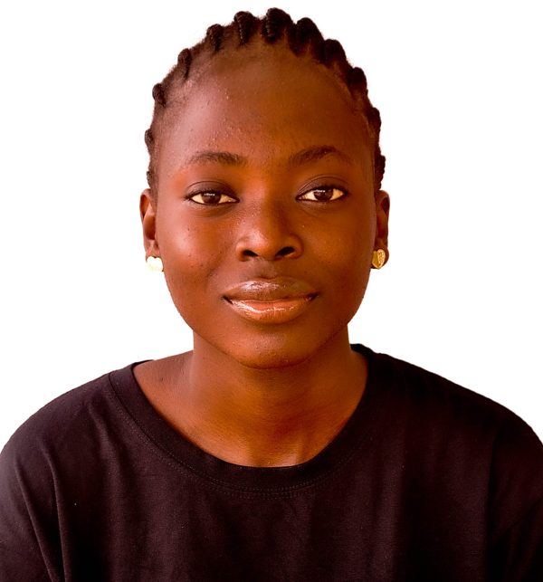

Visual Representation Learning
Understanding how vision models encode visual information and how learned representations transfer across datasets and tasks.
About
I am an M.Tech Computer Science and Engineering student specializing in Artificial Intelligence and Machine Learning at Shobhit Institute of Engineering & Technology, Meerut, India, under the supervision of Dr. Ruchi Holker.
I use synthetic-image and deepfake detection as a practical testbed for studying how visual models behave when the data distribution changes. Before my M.Tech, I completed a B.Sc. in Computer Science at Taraba State University, Nigeria, in February 2025.

M.Tech CSE (AI/ML)
Shobhit Institute of Engineering & Technology
Research
My current work explores how visual models learn representations, how model capacity affects generalization, and how models respond when the data distribution changes.
Understanding how vision models encode visual information and how learned representations transfer across datasets and tasks.
Studying transformer-based visual architectures, their capacity, computational requirements, and representation quality.
Investigating why strong in-distribution performance can fail to transfer when the data source, generator, or visual distribution changes.
Submitted Work
Submitted · Awaiting Outcome
Signal, Image and Video Processing
Submitted · Awaiting Outcome
ICISCS 2027
Experience
2026 – Present
Shobhit Institute of Engineering and Technology
Research on Vision Transformers for synthetic media and deepfake detection.
Aug 2023 – Nov 2025
CRTV
Supported live streaming production and broadcasting.
Jan 2024 – May 2024
Sandlip Digital Consulting
Built web features with HTML, CSS, JavaScript, PHP and MySQL.
Curriculum Vitae
My CV contains my education, research experience, publications, technical experience, and selected activities.
Contact
I am open to research conversations, academic collaborations, and opportunities related to computer vision and machine learning.